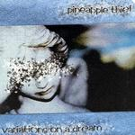

| Artist: | Pineapple Thief |
| Title: | Variations On A Dream |
| Label: | Cyclops CYCL 129 |
| Length(s): | 63 minutes |
| Year(s) of release: | 2003 |
| Month of review: | [01/2004] |
| 1) | We Subside | 4.58 |
| 2) | This Will Remain Unspoken | 3.27 |
| 3) | Vapour Trails | 8.31 |
| 4) | Run Me Through | 4.41 |
| 5) | The Bitter Pill | 4.36 |
| 6) | Resident Alien | 4.14 |
| 7) | Sooner Or Later | 4.16 |
| 8) | Part Zero | 7.27 |
| 9) | Keep Dreaming | 4.26 |
| 10) | Remember Us | 16.18 |
This Will Remain Unspoken continues the downer line of the music. This is not music to get happy by. The strumming acoustic guitar, the nice subdued orchestration and the somewhat desperate vocals all add to this effect.
With Vapour Trails we finally arrive at something of progressive length (harumph). Bleepy keys, slow moving, soft voiced vocals, this is a dreamy one. This continues for over four minutes, after which we come to the instrumental section, which continues in laid back fashion, after which the melancholic repetitive chorus sets in. The final few minutes are even more dreamy.
Run Me Through for some reasons reminds me of Abacab in the opening. The continuation is quite different, i.e., in the line of the previous. There is a bit more pace in the song now, but we stay on the progressive pop side. The guitar solo is a strong one.
The Bitter Pill is a light strumming affair, somewhat faceless by comparison to the wonderful Resident Alien. The opening reminds me of Oldfields Tubular Bells, with lots of interplaying effects. No vocals on this one.
Sooner Or Later has plenty of tension, with the addition of rhythmic guitar and some nice psyche lines. The vocal melody of the chorus is again a great one. This is also one of the rowdier tracks with sharp guitar work and a bit of power and drive. The pop sensibility is not gone though.
Part Zero is among the tracks, one of the lenghier ones. Again the presence of strumming acoustic guitars and this time also some moody synth cello. Very somber. Great vocal melodies again, this time the vocal parts are quite up-beat. Mellotronic moods pervade this track as well and we have some Anekdoten like eruptions to deal with as well.
Keep Dreaming has a bit of a Gazpacho feel, slow and percussive. This is also something of a moving children song in the chorus, but the main reference is still Radiohead, but friendlier. Nice mellotron and oboe like synths sound us out. The rhythm side of it all is loose and modern.
Remember Us is the epic track running more than sixteen minutes. What can you expect here? The same as before, but with lots of low underneath the friendly melodic acoustic guitar. Later the pace sets in somewhat as we move up to mid-tempo. The guitar sounds rather psychedelic here. The doubled vocals sound quite poppy. Notwithstanding its length a song which easily wurms itself a way into your mind. At times the music can be quite sharp almost hallucinogenic with a string reverb. Halfway we come to a part where the guitar simply grind out the noise, but then the song gets underway again with repetitive guitar plus keyboard patterns, building things up nicely indeed.
This album continues a number of rounded well-penned, played, sung etc. compositions which leave little to be desired. Except maybe that the music and the vocalist should fire up a bit more in places, to counter the slow and dreamy overall tone somewhat. Pineapple Thief should appeal to Placebo, Porcupine Tree and No-Man listeners, as well as Coldplay and Radiohead, with their special brand of progressively arranged pop songs.